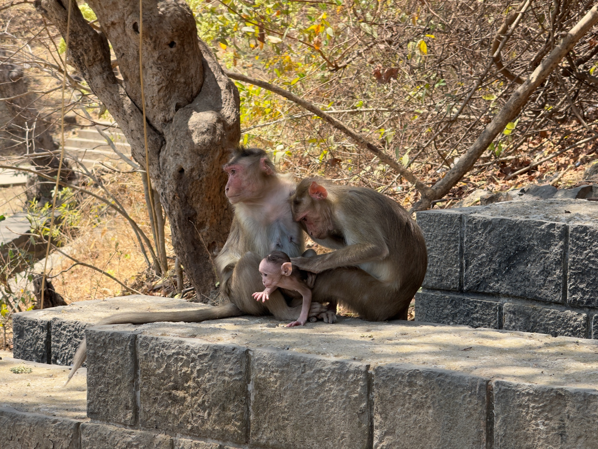

我想孟買之所以會被稱為金錢之都，是因為這裡是金融業聚集的所在，也有許多有錢人在這裡置產，從機場到青旅的路上，看到許多高樓豪宅建案，以及許多歐洲的進口跑車，這是印度其他地方所看不到的。在孟買有著許多英國殖民的痕跡，有許多歐式建築，這裡的市容也乾淨許多，由於青旅非常靠近印度門(Gateway Of India Mumbai)，徒步約600公尺就可以到達印度門，這裡的小巷走起來就有種置身在歐洲城鎮的錯覺，有著非常明顯的英式建築風格，當然小巷和街道也是比北印度的城市還要乾淨許多，喇叭按壓的次數也大大減少許多。
孟買市區的火車其實是相當的便宜，單趟只需要不到20盧比就可以在孟買主要的景區移動，在火車上看到印度第三性的海吉拉，其實在北印的火車上有看過一兩次，那時候還不知道他們是海吉拉，第一次看到他們的長相總覺得不像生理女，但穿著及打扮卻又像女生，而關於海吉拉我覺得是一個特殊的存在，根據印度神話《羅摩衍那》他們的言語具有神奇的魔法，他們既能透過言語祝福別人，亦能詛咒別人。會知道他們是海吉拉，是在參加達拉維貧民窟時，問導遊為什麼火車上會有人對著乘客拍手，並伸手要錢，原來才知道他們因為身分特別，在印度社會不易找到謀生的工作，所以只能隨著火車到處移動，透過祝福別人賺取微薄的薪水。而達拉維貧民窟的探索，一開始其實並不順利，同行的三個英國年輕人遲到半小時，只有我和導遊準時在咖啡廳出現等他們，對於參加行程而不準時其實是很不尊重其他人的一件事。等他們到達之後，我們就沿著火車站出口進入達拉維貧民窟，入口處有一個達拉維代表的神廟(Ganpati Temple)，從這裡開始就正式進入達拉維，導遊吩咐我們裡面不允許拍照，在高架橋下有著許多攤商來來往往，這裡其實感覺很像回到德里，不乾淨且擁擠的街道，但多了特殊且耐人尋味的氣味，其實我很清楚，這次的行程只有看到貧民窟的冰山一角，只有參觀達拉維的商業區，其他更深入的住宅區環境應該更加惡劣，在商業區參觀了塑膠回收的煉解製程、肥皂的回收再造、皮革的鞣製與加工、麵包的烘焙製作以及陶罐的燒製，這裡充斥著生命力，縱使這裡的收入非常的微薄，居住的環境狹小陰暗，但他們仍在這裡努力的生存。在遊覽的過程中，有時候需要穿過陰暗、潮濕又狹小的捷徑，中途有經過穆斯林和印度教的居住區，不同的宗教信仰有著不同的感受，發現印度教徒對生活環境髒亂的忍受力比穆斯林還要高，在焦特布爾有著相同的感受。
而在參訪達拉維貧民窟的前一天，因為頭髮長度已經過長到難以整理，所以中午就到青旅附近的髮廊整理頭髮，同時這也是我第一次在印度整理頭髮，但不得不說，設計師的技術還不錯，有剪出好看的髮型，雖然跟原本給他看的照片不太一樣就是了。整理完頭髮後，下午就到CST火車站參觀，不過這天我只有在附近遠遠看，不知道有一個景觀台可以過去，到了隔天才仔細認真地欣賞，火車站和周圍的建築非常精美，完全就是哥德式風格的建築，站在馬路中央的觀景台，就彷彿置身在歐洲一般，其實除了CST火車站之外，周遭還有郵局、法院或是鐘塔，都有著相同的建築風格，哥德式高聳的塔頂以及許多或圓弧或尖角的拱門，更是有許多精美的女神及動物雕像。從CST火車站離開後，我先坐計程車到了千人洗衣廠參觀，賣小飾品的小女孩告訴我，通常洗衣服的粗活由於太辛苦都是男生負責，而小件衣物是透過人工洗淨，如果是大件的衣物則是用機器清洗，洗完後就會晾在外面利用陽光乾燥，另外如果沒有太陽還有烘乾機可以使用。結束千人洗衣廠的行程，就搭火車前往當地還算知名的百貨公司(Jio World Drive)參觀，這家百貨公司並不是孟買最奢華的一間，但國際知名品牌還是有的，但我還是覺得曼谷的百貨公司比較厲害，在裡面喝了一杯星巴克後，就搭車前往Juhu海灘看日落。
Sour fruits
Juhu beach, Mumbai
Sunset
Juhu beach, Mumbai
Twilight
Juhu beach, Mumbai

Me and the couple I met at the beach
Andheri, Mumbai
Western Railways Headquarters, Mumbai
Juhu海灘宛如台灣的墾丁，到處都是玩水或曬太陽的人們，整個海灘沿岸都是滿滿的人，海灘上也有好多家賣酸果的小攤販，不過試吃後，不論是青芒果、蔓越莓或是橄欖等都不對我胃口，相當的酸澀。在這裡我也認識到兩對年輕的印度夫妻，其中一對夫妻帶著小朋友來海灘玩沙，另一對夫妻則單獨出門約會，他們原本並不認識而只是坐在隔壁，但因為我的加入讓我們都互相認識，一起在海灘旁等待日落的來臨，而這裡的日落著實相當美麗，天空被火紅的日落渲染出美麗的漸變色，留在這裡的人們都正等待這美麗的時刻，而可想而知，等到看完日落要離開時，這裡肯定是人滿為患，紛紛要離開海灘，到處都是要攔計程車的人們，我和留下來的一對夫妻一同前往火車站，而在靠近海灘的馬路其實根本就叫不到計程車，小哥告訴我司機除了會優先選擇長距離的旅客之外，也會先讓老人、女人及小孩上車，於是我們走了好一大段路，終於由他的妻子攔到一台計程車，於是我們就前往另一個相對遠一些的火車站，抵達火車站後，我要付計程車錢給他們，而他們婉拒我的好意，說我是來印度的旅客也是他們的兄弟，同樣連火車票都幫我買好，也送我到前往目的地的月台，這是我在印度感到暖心的時刻之一，在旅行的途中遇到許多善心人士，讓旅途充滿更多難忘的回憶。
Take a boat out of Gateway of India
Elephanta Caves, Mumbai
Elephanta Caves, Mumbai
Elephanta Caves, Mumbai

Monkey family
Elephanta Caves, Mumbai

Working donkeys
Elephanta Caves, Mumbai
Lift the sedan chair
Elephanta Caves, Mumbai
Roasted corn
Elephanta Caves, Mumbai
在要離開孟買的這天，早上退宿完之後就選擇到距離印度門約10公里的象島(Elephanta Island)去看石窟，從印度門搭船到象島需要約30分鐘的時間，下船後可以選擇搭乘小火車到象島的入口處，在入口處付完入島費5盧比後，就可以準備攻頂，在登島的步道兩側有許多販售紀念品或飲用水的攤販，而如果體力負荷不了的人更是可以花費1600盧比聘請轎夫，把你從山下抬到石窟的入口，如果是體力較好的人，中途沒有停下腳步，大約則需要花費約4-5分鐘的時間從山下走到石窟入口。象島石窟(Elephanta Caves)在1987年被登錄為世界文化遺產，但其實只有前兩個石窟有還算完整的雕像可以看，後面的石窟根本沒任何東西空空如也，只有濕婆的代表物林伽可以看，而象島這裡除了石窟還有許多猴子，大部分猴子其實都很溫馴，但還是有遇到兩隻會虎視眈眈看著我手上無花果和飲用水的頑固猴子，而除了猴子還有躺在地上曬太陽的小狗，以及負責搬運磚頭的小毛驢。總體而言，象島石窟沒有期待就沒有傷害，但如果體力負荷得來，其實是可以搭船過來體驗有別於孟買歐式都市的風情，島上的居民更加純樸，回程的路上買了兩隻烤玉米，這裡的玉米沾的調味料是檸檬和鹽巴，用檸檬沾一點鹽巴後，抹在烤玉米上，整體吃起來相當清爽，可以讓人連續吃上兩隻玉米，而且一隻烤玉米只要25盧比，非常便宜且地道。
回到印度門後，就順路到昨天吃過的烤雞店，吃了一份沙威瑪、一份烤雞和一串烤蔬菜，沙威瑪一如既往的美味，而其他則嚐起來口味普通。結束晚餐後，就回到青旅拿我的行李，叫了一台計程車前往車程約一個半小時的孟買機場，而前往孟買機場的路上並不順利，司機小哥的車子感覺相當破舊且不安全，方向盤和排檔感覺相當不好操控，加上小哥開車還一直打電話跟朋友聊天，更是沒有保持安全距離，突然撞到前方的貨車，幸好貨車司機沒有追究，又加上往機場的路上嚴重塞車，乘坐體驗整體讓人感到相當不悅，好在有平安地順利抵達機場，而孟買機場雖然看上去華麗高級，廁所用的乾手機是Dyson的，但唯二的敗筆就是手機音量開好開滿的印度人以及候機室飛來飛去的蚊子，在候機室不得不噴上防蚊液，讓人不經讚嘆印度第二大的機場體驗竟然如此差，但最後還是順利結束這次為期四個星期的北印度之旅，離開印度後再到泰國多待三個星期休息，回台灣後再好好面對兵役及工作。